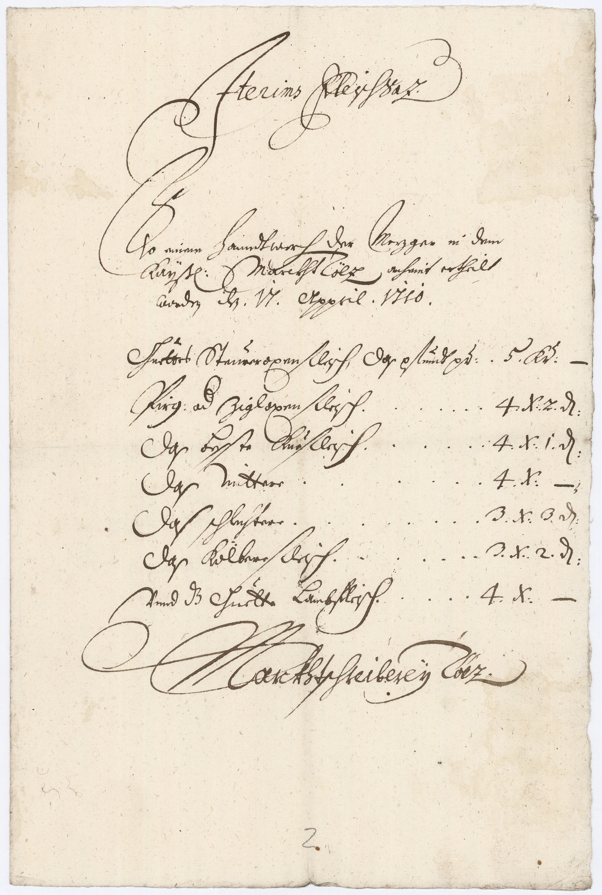

StA München, Hofmark Hohenburg, 1260 (Prod. 2)



Kommentar
Editor: magdalena.weileder@textgrid.de
Archiv: StA München
Bestand: Hofmark Hohenburg
Signatur: 1260 (Prod. 2)
Ort: (Bad Tölz)
Datum: 1710 (April 17)
Schlagwort: Akt
Schwierigkeitsgrad: leicht
Kurzbetreff:
Fleischpreise zu Tölz
Fleischpreise zu Tölz
Schreiberhände:
- (S1)
- spätere Paginierung von anderer Hand (Bleistift) (S2)
Kommentar:
Der Akt enthält Aufstellungen über die Fleischtarife zu Tölz aus den Jahren 1709–1713 und 1756, hier wird die im Frühjahr 1710 angelegte Preisliste gezeigt.
Die Überschrift (Z. 1) und die letzte Zeile sollten durch Kanzleischrift ausgezeichnet werden, indem allerdings das Fremdwort Iterims (gemeint: Interims) und der Ortsnamen Tölz in humanistischer Kursive geschrieben sind, stehen nur die Worte FleischSaz und Marckhtschreibereÿ in Kanzleischrift. Die Preisliste selbst ist in Kurrentschrift angelegt. Die ausladenden Anstriche, vor allem am Zeilenbeginn, erschweren die eindeutige Unterscheidung von Groß- und Kleinbuchstaben. Auch die Abstriche sind teilweise schwungvoll ausgeführt. Langes s wird auch am Wortende verwendet, n am Wortende wird in Z. 4 nur mit einem Strich angedeutet bzw. gekürzt, das c in ch und sch wird verschliffen (z.B. Z. 2: Hanndtwerch, Z. 5: Steureroxenfleisch).
Der Akt enthält Aufstellungen über die Fleischtarife zu Tölz aus den Jahren 1709–1713 und 1756, hier wird die im Frühjahr 1710 angelegte Preisliste gezeigt.
Die Überschrift (Z. 1) und die letzte Zeile sollten durch Kanzleischrift ausgezeichnet werden, indem allerdings das Fremdwort Iterims (gemeint: Interims) und der Ortsnamen Tölz in humanistischer Kursive geschrieben sind, stehen nur die Worte FleischSaz und Marckhtschreibereÿ in Kanzleischrift. Die Preisliste selbst ist in Kurrentschrift angelegt. Die ausladenden Anstriche, vor allem am Zeilenbeginn, erschweren die eindeutige Unterscheidung von Groß- und Kleinbuchstaben. Auch die Abstriche sind teilweise schwungvoll ausgeführt. Langes s wird auch am Wortende verwendet, n am Wortende wird in Z. 4 nur mit einem Strich angedeutet bzw. gekürzt, das c in ch und sch wird verschliffen (z.B. Z. 2: Hanndtwerch, Z. 5: Steureroxenfleisch).
Entzifferung
(Absatz Beginn)
1 Jterims(Wechsel des Schriftsystems)FleischSaz.
2 So einem Hanndtwerch der Meczger in dem
3 Kaÿß(erlichen)Marckht Tölz(Wechsel des Schriftsystems)anheint ertheilt
4 worde(n) de(n) .17. Appril .1710.
| 5 Guettes Steureroxenfleisch, Das pfund p(e)r | 5 Kr(euzer) | – |
| 6 Pirg: od(er) Zigloxenfleisch | 4 X(er) | 2 d(enarios) |
| 7 Das besste Kuefleisch | 4 X(er) | 1 d(enarium) |
| 8 Das Mittere | 4 X(er) | – |
| 9 Das schlechtere | 3 X(er) | 3 d(enarios) |
| 10 Das Kölberefleisch | 3 X(er) | 2 d(enarios) |
| 11 Vnnd d(a)z Guette Lambfleisch | 4 X(er) | – |
12 Marckhtschreibereÿ Tölz(Wechsel des Schriftsystems).
13 (spätere Paginierung von anderer Hand (Bleistift):) 2
(Absatz Ende)
Transkription
(Absatz Beginn)
1 Iterims(Wechsel des Schriftsystems) fleischsaz.
2 So einem hanndtwerch der meczger in dem
3 kaÿßerlichen marckht Tölz(Wechsel des Schriftsystems) anheint ertheilt
4 worden den 17. appril 1710.
| 5 guettes steureroxenfleisch, das pfund per | 5 x. | |
| 6 pirg- oder zigloxenfleisch | 4 x. | 2 d. |
| 7 das besste kuefleisch | 4 x. | 1 d. |
| 8 das mittere | 4 x. | |
| 9 das schlechtere | 3 x. | 3 d. |
| 10 das kölberfleisch | 3 x. | 2 d. |
| 11 unnd das guette lambfleisch | 4 x. |
12 marckhtschreibereÿ Tölz(Wechsel des Schriftsystems)
13 (spätere Paginierung von anderer Hand (Bleistift):) 2
(Absatz Ende)